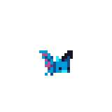

Gameplay-Screenshot
Der Hauptscreen gibt Ton, Beleuchtung und Traversal-Fläche des aktuellen Builds wieder.
Diese Seite sammelt Material fuer Spieler, Presse und Creator: Screenshots, Kernfakten, Brand-Kontext, Demo-Wege und offizielle Kontaktpunkte.
Für Presse, Creator und interessierte Spieler: alle zentralen offiziellen Kanäle in einer durchgehenden Leiste.
Der Hauptscreen gibt Ton, Beleuchtung und Traversal-Fläche des aktuellen Builds wieder.

Animierter Blick auf Joeys Slime-Form und die momentane Präsenz im Spiel.

Die frühe Luftgegnerin aus Kapitel I und ein gutes Beispiel für kontrollierte Raumbedrohung.

Ein dunklerer Blick auf die Tonalität des Projekts und den Höhlencharakter.
Die offizielle Website von Joey's Slimeventure verbindet Demo, Weltueberblick, Wiki, Media und Devlog in einer klaren Struktur. Dadurch finden Spieler und Presse das passende Material schneller und mit weniger Reibung.
Letzter sichtbarer Devlog-Eintrag: backup: snapshot website before UI overhaul